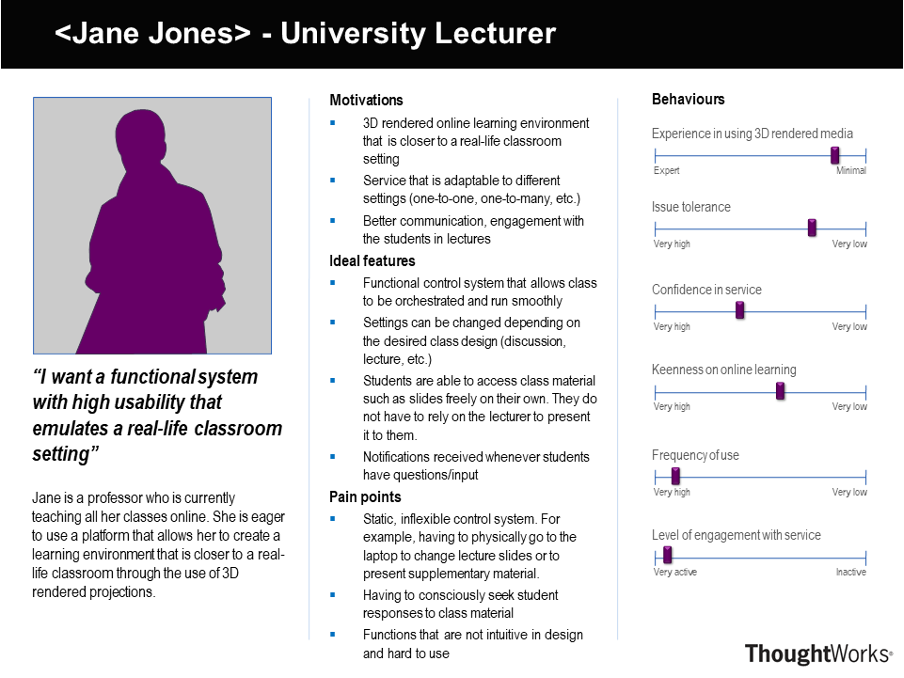

Requirements

Project Background and Client Introduction
International Business Machines Corporation (IBM) is an American multinational technology and consulting company. It has a large and diverse portfolio of products and services on providing cloud platforms and cognitive solutions. The featured products fall into the fields of artificial intelligence, cloud computing and data analytics. Our project is focused in AI, more specifically computer vision and augmented reality.
Project Goals
After meeting with our clients, we concluded our main project goal to be developing a media editor that creates a video stream which can be projected three-dimensionally onto a pyramid, where input videos must be captured by a minimum of three webcams of different angles.
Requirement Gathering
The requirements listed from the initial project-specification email were unclear and abstract, so we arranged a meeting with our clients for clarification. During this meeting, the clients provided us with information to help us understand the project better and establish specific goals and requirements.
Following are the questions that were asked in the meeting:
Moreover, we decided to conduct semi-structured interviews as we believed it would allow us to gather more personal, in-depth responses and explore the perspectives of the users. We decided to interview a university student and a lecturer as we believed that our project would have the most impact in an academic setting due to the prominence of remote learning.
Interview with a 2nd year university student
Do you believe that online learning has improved the quality of education you receive in college?
A: No, I personally think I learned better when classes were in-person. I could focus better and engage with class material more thoroughly.
Q: What are the biggest limitations of online learning compared to in-person?
A: The biggest one is the lower level of engagement with the lecturer. On the Zoom platform, the lecture slides or class material takes up most of the screen and the lecturer’s face appears in a small container in the corner. Although there are modes of interaction with the presenter available such as the chat function, I felt that most of the time it was like watching a pre-recorded lesson that lacks the engagement factor.
Q: What are the advantages of online learning?
A: I liked the fact that anytime a question is raised, everyone in attendance of the class is made aware of it (especially when it is posted via the public chat room or Moodle forums) and the subsequent answers to it. When classes were conducted in person, there were instances where questions would be asked in private settings where only the person asking, and the lecturer became aware. Now that almost all interactions take place online, it becomes available for anyone to access and benefit from them.
Q: Do you believe this system (3D rendering) would improve the quality of lectures?
A: Yes, I believe that it would bring a more person-to-person feeling to the lectures which in turn would increase the level of engagement in class. Additionally, being able to see the lecturer on a separate device such as the pyramid would free up my laptop to be used entirely for accessing supplementary class material.
Interview with a university lecturer
Q: What key features would you like to see implemented in this 3D live streaming platform?
A: First of all, I would like it to be compatible with projecting various types of materials in full 3D. A “pyramid” should be used by users to triangulate four quadrants to project 3D renderings. It is also important that synchronized streams are constructed to ensure smooth streaming of the visuals with minimal delays. In a classroom setting, the lecturer should be able to control the system with a portable device (e.g. phone) so that he/she wouldn’t have to lunge back and forth to the computer to change slides, share screens etc. It also goes without saying that communication features should be implemented to ensure high levels of engagement.
Q: What professional/academic settings would you like for this service to be able to accommodate?
A: The most obvious one would be a one-to-many, lecture-like setting where one main speaker presents content and speaks to many others. One-to-one interactions such as a medical consultation between a doctor and a patient. Conference-like setting where there are multiple parties simultaneously participating. In this setting, different cases should be considered; some may not have cameras available to project themselves in 3D but should still be able to participate in the meeting.
Q: Are there any other suggestions?
Consumability of the service is another important factor to be considered. Even if the service is rich in functions, there is no point if the users find it too hard to use and become reluctant to use it.
Personas
After going through the requirement-gathering process, we were able to construct two personas to symbolize our potential users.
Jack Miller (Student): To attend a lecture, Jack logs into the platform. In order for him to project himself to others and view the lecturer’s projections in a 3D rendered manner, he sets up two cameras to capture visuals of himself and his phone attached to the pyramid to view the lecturer. During class, he is able to see the visuals presented through the 3D rendered medium from the lecturer. He is free to use his laptop entirely for viewing supplementary class material. When he has a question, he simply raises his hand, which gets noticed and addressed by the lecturer in a timely manner.
Jane Jones (Lecturer): When delivering a lecture, Jane sets up two cameras which broadcasts her images to the attendees in 3D. She can be more flexible with the use of supplementary tools, like showing students a physical prototype, as long as they can be captured in the camera angle. With the use of a 3D holographic display, she is able to see and respond to questions from students while simultaneously teaching. She can deliver class material in a more engaging manner as the use of two cameras gives her more room to move around, explain concepts using gestures and other physical tools.